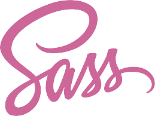

Hi! I am João
Full-Stack developer
MINHAS SKILLS
Confira as principais tecnologias que uso em meus projetos.


MEUS PRINCIPAIS PROJETOS POSTADOS

JM FINANÇAS
Aplicação para controle de finanças inspirado na plataforma Mobils e Organizze, com sistema de login, cadastro de transações, calculo de valor investido e graficos interativos para melhor experiencia e analise de dados.
Tecnologias utilizadas

JM EDUCA
Sistema de controle de turmas, permitindo cadastro de turmas, series, classes, alunos e materias. Podssibilidade de controle de notas e verificação de alunos aprovados e reprovados.
Tecnologias utilizadas
Projetos Front-end
A aplicação se resume em uma pagina home com entrada paras as paginas "The last of us" e "Santos", onde foram realizados sites institucionais responsivos, utilizando HTML, CSS, JavaScript e SASS.
Tecnologias utilizadas

ME CONHEÇA
Iniciei minha carreira na programação em 2020 ao entrar na faculdade de Ciência da Computação. Porém devido a pandemia e outros fatores resolvi sair cursando o 5° período. A faculdade me ajudou a ter uma base em desenvolvimento de software. E isso foi fundamental para que eu pudesse seguir dali adiante por conta própria Programação se tornou um hobby para mim, fico grande parte do meu tempo livre lendo artigos e documentação de novas tecnologias e acredito que isso me levará muito longe no futuro Sigo com muita motivação e estou sempre a disposição para aprender novas tecnologias ou o que for nescessário